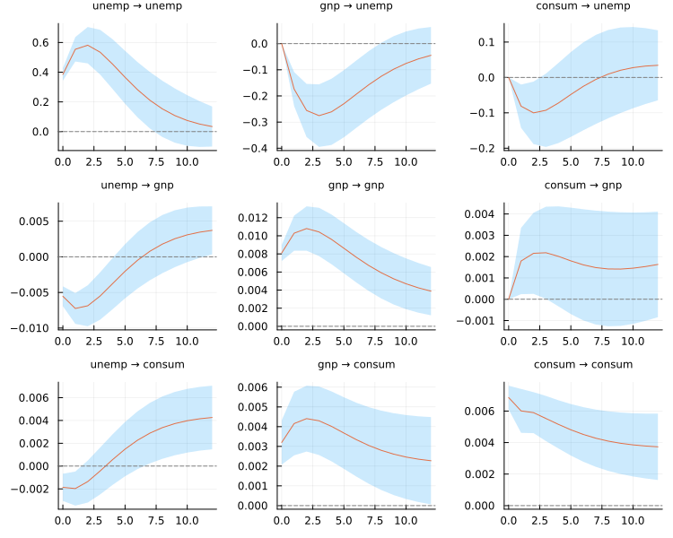

API: Vector Autoregression
A fitted VAR's impulse responses, with analytic ±1.96 standard-error bands — the output most of this page exists to produce. The worked explanation is in Manual: Vector Autoregression and Manual: Causality and Impulse Responses.
using TSAnalytics, Plots
e = dataset("econ5")
m = fit_var((unemp = e.unemp, gnp = log.(e.gnp), consum = log.(e.consum)), 2)
plot(irf(m, 12; stderr = true); size = (750, 600))
Fitting
TSAnalytics.fit_var — Function
fit_var(Y, p; deterministic=:const, method=:qr) -> VARModelFit a vector autoregression of order p by least squares.
Y is anything tsmatrix accepts — a matrix with rows = time and columns = variables, a NamedTuple of columns (so fit_var(dataset("econ5"), 2) works directly), or a collection of column vectors. Variable names come from tsnames when the container carries them.
y_t = ν + Π t + A₁ y_{t-1} + … + A_p y_{t-p} + u_tdeterministic selects the deterministic terms and spans both references' vocabularies, which are mutually incomplete; see _var_ndet's table. The spelling is deliberately neither R's type= nor statsmodels' trend=, because both are ambiguous: R's type="trend" means a trend with no constant, while statsmodels' trend="ct" means constant and trend, and they differ by 6.15 in log-likelihood on the bundled fixture.
What it refuses
Both references silently accept several inputs that cannot produce a meaningful fit. [V] n = 8, K = 2, p = 5 — eleven parameters per equation from three observations — returns without complaint from both. This refuses, by name:
K = 1. Both references refuse this too, and the univariate path is far better served byarxorfit_arima.p < 1.[V]R errors obscurely (length of 'dimnames' [2] not equal to array extent);statsmodelsdoes not error at all.ptoo large for the sample.NaNin the input.[V]R saysNAs in y.;statsmodelsraisesLinAlgError: SVD did not convergeand LAPACK writes to stderr.- An unrecognised
deterministic.
Out of scope, stated rather than hidden
Exogenous regressors (vars::VAR(exogen=), statsmodels VAR(exog=)), restricted VARs (vars::restrict) and Bayesian shrinkage priors are not implemented. The regressor construction here would carry exogenous columns untouched, so it is a clean later addition rather than a rewrite.
julia> using TSAnalytics, DelimitedFiles
julia> Y = readdlm(joinpath(dirname(pathof(TSAnalytics)), "..", "test",
"fixtures", "var", "var2_p1.csv"), ','; skipstart=1);
julia> m = fit_var(Y, 1);
julia> size(m.A[1])
(2, 2)
julia> round(m.loglik, digits=6) # vars::logLik: -500.83136
-500.83136
julia> is_stable(m)
trueSee also var_select, roots, forecast.
TSAnalytics.VARModel — Type
VARModel <: TimeSeriesModelA fitted vector autoregression, returned by fit_var.
Fields
Y: the data,n × K, rows = time, columns = variables.names: theKvariable names,[:y1, …]when the input carried none.p: the lag order;deterministic: which deterministic terms were included.A:pmatrices, eachK × K.A[j][i, m]is the coefficient on variablemat lagjin equationi— soA[j]is directly the matrix the companion form and the impulse-response recursion want.det_coef:K × ndet, columns in the order(const, trend, trend²).sigma_df:E'E / (T - Kp - ndet), the degrees-of-freedom-adjusted residual covariance — this feeds standard errors and forecast intervals.sigma_mle:E'E / T— this feeds the log-likelihood and the information criteria. Both are stored because both references report both and they are not interchangeable.se:K × (Kp + ndet), laid out likecoef(m).vcov_full:K(Kp+ndet) × K(Kp+ndet),kron(sigma_df, (Z'Z)⁻¹), kept whole rather than as a diagonal because the analytic impulse-response standard errors consume the whole thing.resid,fitted:T × K.loglik,T(effective observations,n - p).C: theKp × Kpcompanion matrix, built once at fit time and cached, becauseroots, the impulse-response recursion and the structural decomposition all want it.converged: alwaystrue— this is OLS, and the field exists for contract uniformity.
Coefficient layout
Neither reference's flat layout is used. vars returns K × (Kp + ndet) with the deterministic terms last; statsmodels returns (ndet + Kp) × K with them first, transposed. Both were verified to agree with each other once reordered (maximum absolute difference 2.5e-16 at K = 2), so there is no right answer to inherit — and separating A from det_coef removes the ordering question from every model built on top of this one.
TSAnalytics.var_select — Function
var_select(Y; lag_max=10, deterministic=:const, parallel=true) -> VARSelectionFit every VAR order from 1 to lag_max and report the four information criteria, with the lag each one selects.
The sample is held fixed, and that is the whole subtlety
[V] Both vars::VARselect and statsmodels' select_order estimate every candidate p on the same T = n - lag_max observations, so the criteria are comparable across p. A single fit_var(Y, p) uses all n - p observations available to it, which is more. On var2_p1.csv with lag_max = 8:
var_select(Y; lag_max=8).aic[1] = -0.6050354269 (T = 192)
aic(fit_var(Y, 1)) = -0.5819716232 (T = 199)Neither is wrong and both references report both, so this is a difference to understand rather than a bug to find. If you want the selection figure for one order, slice the data yourself: aic(fit_var(Y[lag_max - p + 1:end, :], p)) reproduces it exactly.
[V] Note also that statsmodels' select_order(L) returns L+1 values, for lags 0…L, where vars::VARselect(lag.max=L) returns L, for lags 1…L. This returns 1…lag_max, matching R; a lag-0 model is not a VAR.
The candidates are independent fits, so they run on threads when Julia has more than one. The parallel and serial paths select the identical model, not merely an equally good one, which the test suite asserts.
julia> using TSAnalytics, DelimitedFiles
julia> Y = readdlm(joinpath(dirname(pathof(TSAnalytics)), "..", "test",
"fixtures", "var", "var3_p2.csv"), ','; skipstart=1);
julia> s = var_select(Y; lag_max=8);
julia> s.selected.aic # the series really is a VAR(2)
2
julia> s.T # held fixed at n - lag_max
242See also fit_var.
TSAnalytics.VARSelection — Type
VARSelectionThe lag-order selection table returned by var_select: the four information criteria across candidate lags, and the lag each one picks.
T is held fixed at n - lag_max across every candidate, which is what makes the criteria comparable with one another. A fitted VARModel's own aic uses its own larger sample, so the two numbers differ by construction — see var_select.
Stability
TSAnalytics.roots — Function
roots(m::VARModel) -> Vector{Float64}The moduli of the companion-matrix eigenvalues, largest first. The process is stable when every one is below 1.
[V] This is the stage's most dangerous convention trap, because getting it wrong silently inverts a stability test.
vars::roots() returns these companion moduli (stable if < 1). statsmodels' .roots returns the roots of the characteristic polynomial (stable if |·| > 1). They are exact reciprocals — verified on five fixtures with max|R − 1/py| between 1.1e-16 and 9.3e-15.
This package follows R, because "the largest root is 0.97, close to the boundary" is the reading practitioners expect. To compare against statsmodels, take 1 ./ roots(m).
TSAnalytics.is_stable — Function
is_stable(m::VARModel) -> BoolWhether every companion eigenvalue modulus is below 1 — see roots for why the comparison runs that way round and not the other.
TSAnalytics.companion — Function
companion(m::VARModel) -> Matrix{Float64}
companion(A::AbstractVector{<:AbstractMatrix}) -> Matrix{Float64}The Kp × Kp companion matrix: the VAR(p) restacked as a VAR(1) on Kp states. Exported because the impulse-response recursion and the structural decomposition both consume it.
On a fitted model this returns the matrix cached at fit time. Given the coefficient matrices directly it builds one. At p = 1 the companion matrix is A[1] — there is no identity block.
Forecasting
TSAnalytics.VARForecast — Type
VARForecastA multivariate forecast: horizon × K points with horizon × K × levels interval bands.
Deliberately not a generalised Forecast. That type is univariate by construction — its point is a vector and its lower/ upper are horizon × levels — and nine model families already return it, so widening it would be a breaking change to all of them. The field names match Forecast's wherever they mean the same thing, so the two read alike.
point:horizon × Kse:horizon × Klevels: the requested percentageslower,upper:horizon × K × length(levels)names: theKvariable nameshorizon,model_name
Granger causality
TSAnalytics.granger_test — Function
granger_test(m::VARModel; cause, caused=nothing) -> GrangerTest
granger_test(y, x; lags) -> GrangerTestGranger causality. H0 is that cause does not Granger-cause caused.
These are two different tests, and which you get depends on what you pass. Julia's dispatch is doing real work here rather than overloading a name for convenience.
The system test — granger_test(m::VARModel; cause, caused)
A Wald test on the fitted VAR, restricting every lag of every cause variable in every caused equation to zero. caused defaults to every variable not named in cause.
df1 = p · |cause| · |caused|
df2 = K·T − K·(Kp + ndet) <- the SYSTEM residual degrees of freedom
F = Wald / df1[V] Agrees with vars::causality and statsmodels' test_causality on all 15 reference cases — F to ≤ 7.6e-12, df identically, and p-values to ≤ 7.5e-15 wherever vars does not underflow (see below).
The pairwise test — granger_test(y, x; lags)
A single-equation F test comparing restricted and unrestricted OLS for y on its own lags with and without the lags of x, so df2 is one equation's T − 2·lags − 1. [V] Bit-identical to lmtest::grangertest, and to statsmodels' grangercausalitytests[...]["ssr_ftest"].
When the two coincide, and when they do not
[V] The F statistics are identical when |caused| = 1 — which for the system test's default caused means K = 2 — and differ otherwise. The p-values never coincide, because df2 differs by a factor of K: on var2_p1 at p = 2, 0.4821580341 against 0.4828206979 for the same F of 0.730863702158.
So pick deliberately. The system test is the one to use when a VAR is the model; the pairwise test is what lmtest users will expect.
[V] vars::causality computes 1 - pf(...) instead of the upper tail, so its p-values underflow to exactly zero in ordinary use — on climhyd an F of 13.36 on (10, 2634) df is reported as 0 against a true 3.66e-23. Four of the fifteen reference cases do this. This package uses _f_ccdf and returns the tail, so its p-values are not comparable with vars there; they agree with statsmodels, which gets it right.
julia> using TSAnalytics, DelimitedFiles
julia> Y = readdlm(joinpath(dirname(pathof(TSAnalytics)), "..", "test",
"fixtures", "var", "var2_p1.csv"), ','; skipstart=1);
julia> m = fit_var(Y, 1);
julia> t = granger_test(m; cause = :y1); # vars: F 17.504579, df (1, 392)
julia> (t.df1, t.df2, t.kind)
(1, 392, :system)
julia> round(statistic(t), digits=6)
17.504579See also instantaneous_causality, fit_var.
TSAnalytics.instantaneous_causality — Function
instantaneous_causality(m::VARModel; cause, caused=nothing)
-> InstantaneousCausalityTestTest for instantaneous (contemporaneous) causality between cause and caused: a Wald statistic on the off-diagonal block of vech(Σ), asymptotically χ²(|cause| · |caused|).
Cs = vech(Σ)[idx]
middle = (M[idx, idx])⁻¹ / 2 with M = D⁺ (Σ ⊗ Σ) D⁺'
Wald = T · Cs' · middle · CsD⁺ comes from _dupl_pinv's closed form rather than an SVD, and the selection matrix C is applied by indexing rather than multiplication.
The hypothesis is about contemporaneous correlation, which is symmetric, so this is not a directional statement: swapping cause and caused returns the identical statistic.
[V] statsmodels' test_inst_causality raises IndexError whenever both sets have more than one member — var_model.py does sig_mask[causing_ind, caused_ind] = 1 with two fancy index arrays, which only broadcast when one has length 1. Verified failing at (2,4), (3,3) and (4,2) on k = 6, (2,3) on k = 5 and (2,2) on k = 4, and working at (1, k−1) and (k−1, 1). It always errors rather than returning a wrong answer — checked deliberately. The bug reproduces identically on 0.14.1 and 0.15.0.
So vars::causality is the only reference for a general block, and this package agrees with it there.
julia> using TSAnalytics, DelimitedFiles
julia> Y = readdlm(joinpath(dirname(pathof(TSAnalytics)), "..", "test",
"fixtures", "var", "var2_p1.csv"), ','; skipstart=1);
julia> t = instantaneous_causality(fit_var(Y, 1); cause = :y2);
julia> t.df
1
julia> round(statistic(t), digits=6) # vars: 25.783697
25.783697See also granger_test.
TSAnalytics.GrangerTest — Type
GrangerTest <: HypothesisTestA Granger causality test. H0 is that cause does not Granger-cause caused.
kind records which test this is, and the distinction is not cosmetic — see granger_test:
:system— the VAR-based Wald/F test,vars::causalityandstatsmodels'test_causality. Itsdf2is the system residual degrees of freedom,K·T − K·(Kp + ndet).:pairwise— the single-equation F test,lmtest::grangertestandstatsmodels'grangercausalitytests[...]["ssr_ftest"]. Itsdf2is one equation's,T − 2·lags − 1.
statistic is the F form and wald the chi-square form, df1 · statistic. Both references report both for the system test, and their p-values differ because one refers to F(df1, df2) and the other to χ²(df1).
TSAnalytics.InstantaneousCausalityTest — Type
InstantaneousCausalityTest <: HypothesisTestA test for instantaneous causality: H0 is that the residual covariance has no cross-block correlation between cause and caused. A Wald statistic on the off-diagonal block of vech(Σ), asymptotically χ²(|cause| · |caused|).
This says nothing about direction — it is a statement about contemporaneous correlation, which is symmetric — so swapping cause and caused gives the identical statistic, and the test suite asserts that.
Impulse responses and variance decomposition
TSAnalytics.irf — Function
irf(m::VARModel, h; cumulative=false, impulse=nothing, response=nothing,
stderr=false, boot=false, runs=100, level=95.0,
rng=Random.default_rng(), parallel=true) -> IRFResultImpulse responses of a fitted VAR at horizons 0 … h, both orthogonalized (Cholesky) and non-orthogonalized, as an IRFResult.
cumulative=truereturns running sumsΣ_{j≤i}instead.impulse,responseselect variables by name or index (a single one or a vector);nothingkeeps all of them.stderr=trueattaches the analytic standard errors ofirf_stderr. Point estimates alone are the common case, so they do not pay for a covariance nobody asked for.boot=trueattaches residual-bootstrap percentile bands atlevelpercent fromrunsreplications.
See orth_ma_rep. Reordering the data's columns changes every orthogonalized response; it is a statement about which shocks move which variables within the period, not a formatting choice. The result's names record the order used.
The bootstrap
Residuals are centred and resampled by row, keeping their contemporaneous correlation; each artificial series is rebuilt through the fitted recursion from the real first p observations, refitted with the same lag order and deterministic terms, and its responses recomputed. That is vars' scheme. The band is the elementwise (1-level/100)/2 and (1+level/100)/2 quantiles across replications.
Each replication draws from its own generator, seeded from rng, so a seeded run is reproducible and the threaded and serial paths return bit-identical bands. runs defaults to vars' 100, which is thin for a 95% percentile interval — 1000 or more is advisable when the band matters.
Bands cannot be checked numerically against vars: a different resampling stream gives different numbers by design. The test suite checks what a band claims instead — that it covers the true response of a known VAR at close to its nominal rate.
julia> using TSAnalytics, DelimitedFiles, Random
julia> Y = readdlm(joinpath(dirname(pathof(TSAnalytics)), "..", "test",
"fixtures", "var", "var2_p1.csv"), ','; skipstart=1);
julia> r = irf(fit_var(Y, 2), 8);
julia> r.horizons, round(r.orth[2][1, 1]; digits=10)
(0:8, 0.4716609801)
julia> b = irf(fit_var(Y, 2), 4; boot=true, runs=50, rng=MersenneTwister(1));
julia> b.method, b.runs, size(b.lower[1])
(:bootstrap, 50, (2, 2))See also fevd, ma_rep, irf_stderr.
irf(m::VECMModel, h; cumulative=false, impulse=nothing, response=nothing) -> IRFResult
fevd(m::VECMModel, h) -> FEVDResultImpulse responses and variance decomposition of a VECM, computed from its levels VAR (var_rep) by the Stage 10.3 recursion. Point estimates only: the analytic standard errors of 10.3 are for an unrestricted VAR's coefficients, and the VECM's reduced-rank levels coefficients have a different (singular) covariance, so stderr and boot are refused rather than answered with the wrong formula.
Because the levels VAR has unit roots, the responses of a VECM do not die out: they converge to the permanent effect of the shock.
irf(s::SVARModel, h; cumulative=false, impulse=nothing, response=nothing) -> IRFResult
fevd(s::SVARModel, h) -> FEVDResultStructural impulse responses Φ_i P with P = A⁻¹B, and the variance decomposition by structural shock — Stage 10.3's recursion with the structural impact matrix in place of the Cholesky factor, not a second implementation. The result's orth field holds the structural responses and factorization records :structural or :blanchard_quah; nonorth is the reduced form's, unchanged. Point estimates only: the analytic standard errors of irf_stderr are for the Cholesky factor.
For a recursive just-identified model the structural responses equal the orthogonalized ones of irf(s.var, h) up to the sign of each shock.
TSAnalytics.IRFResult — Type
IRFResultImpulse responses returned by irf. Every matrix is [response, impulse] and every vector of them is horizon first, with horizons == 0:h — so r.orth[1] is the impact response.
orth,nonorth: orthogonalized (Cholesky) and non-orthogonalized responses, plain or cumulative ascumulativesays.lower,upper: bootstrap percentile bands fororth;lower_nonorth,upper_nonorththe same fornonorth.nothingunlessboot=true.stderr_orth,stderr_nonorth: analytic standard errors,nothingunlessstderr=true.names: the model's variable order, which is the Cholesky ordering;responses,impulses: the variables actually returned.level,runs: the bootstrap settings;method::none,:analyticor:bootstrap, so a plot can say what its bands are.factorization::cholesky, recording how the orthogonalized shocks were identified.
TSAnalytics.ma_rep — Function
ma_rep(m::VARModel, h) -> Vector{Matrix{Float64}}The first h+1 matrices of the moving-average representation of a fitted VAR, Φ₀ = I and Φ_i = Σ_{j=1}^{min(i,p)} Φ_{i-j} A_j. These are the non-orthogonalized impulse responses: Φ_i[response, impulse] is the response of response i periods after a unit shock to the reduced-form error of impulse.
Returned horizon first, as a vector of K × K matrices, so Φ[i+1] is Φ_i. The two references disagree on every layout while agreeing on every number — vars puts the horizon last in a K × K × (h+1) array, statsmodels first — and when K == h+1 a transposed implementation agrees with a correct one in shape, so the test suite checks this layout on a fixture where that happens.
The order Φ_{i-j} A_j (not A_j Φ_{i-j}) is the one that matches both references, with A_j[i, m] the coefficient of equation i on variable m at lag j. The recursion accumulates into each matrix in place, so it allocates the h+1 result matrices and nothing else.
julia> using TSAnalytics, DelimitedFiles
julia> Y = readdlm(joinpath(dirname(pathof(TSAnalytics)), "..", "test",
"fixtures", "var", "var2_p1.csv"), ','; skipstart=1);
julia> m = fit_var(Y, 2);
julia> Phi = ma_rep(m, 8);
julia> length(Phi), Phi[1] == [1.0 0.0; 0.0 1.0], Phi[2] == m.A[1]
(9, true, true)
julia> round(Phi[3][2, 1]; digits=10) # response of y2 to y1, two periods on
0.1999228499See also orth_ma_rep, irf.
TSAnalytics.orth_ma_rep — Function
orth_ma_rep(m::VARModel, h) -> Vector{Matrix{Float64}}The orthogonalized moving-average matrices Ψ_i = Φ_i P, i = 0 … h, where P is the lower-triangular Cholesky factor of the residual covariance (PP' = Σ). Ψ_i[response, impulse] is the response to a one-standard-deviation orthogonalized shock.
The Cholesky factor makes the first variable contemporaneously affected only by its own shock, the second by the first two, and so on. Reordering the columns of the data is therefore not cosmetic: it changes every orthogonalized response, while the non-orthogonalized ma_rep is merely relabelled. Choosing an order is a claim about contemporaneous causation. The fitted model's names record the order that was used.
julia> using TSAnalytics, DelimitedFiles
julia> Y = readdlm(joinpath(dirname(pathof(TSAnalytics)), "..", "test",
"fixtures", "var", "var2_p1.csv"), ','; skipstart=1);
julia> Psi = orth_ma_rep(fit_var(Y, 2), 4);
julia> round.(Psi[1]; digits=10) # the Cholesky factor itself
2×2 Matrix{Float64}:
1.00586 0.0
0.295542 0.731323TSAnalytics.irf_stderr — Function
irf_stderr(m::VARModel, h; orth=false, cumulative=false) -> Vector{Matrix{Float64}}Analytic asymptotic standard errors of the impulse responses at horizons 0 … h, horizon first, each K × K and laid out [response, impulse] like ma_rep.
Non-orthogonalized (Lütkepohl 2005, Prop. 3.6): cov(vec Φ_i) = G_i Σ_α G_i', with Σ_α the covariance of coef_alpha. Orthogonalized: cov(vec Ψ_i) = C_i Σ_α C_i' + C̄_i Σ_σ C̄_i' with C_i = (P' ⊗ I) G_i, C̄_i = (I ⊗ Φ_i) H, Σ_σ the covariance of vech Σ̂ and H the derivative of the Cholesky factor. cumulative=true gives the standard errors of the running sums Σ_{j≤i} Φ_j (or Ψ_j), whose derivatives are the running sums of the same matrices.
Two things worth knowing
The orthogonalized formula is verified by simulation, not by the book. statsmodels' own source marks the textbook statement as wrong at this equation. The version implemented here was checked two independent ways in the Stage 10 handoff: a central-difference Jacobian of the recursion (agreement ≤ 2.1e-12), and a 4000-replication parametric bootstrap of the sampling distribution (agreement within 1.4–4.8%, against a Monte Carlo error of about 1.1%). vars has no analytic standard errors at all, so statsmodels is the only software reference.
At horizon 0 the two forms differ structurally. Φ_0 = I is not estimated, so its standard errors are exactly zero. Ψ_0 = P depends on the estimated Σ, so its standard errors are not — except above the diagonal, where P is zero by construction.
julia> using TSAnalytics, DelimitedFiles
julia> Y = readdlm(joinpath(dirname(pathof(TSAnalytics)), "..", "test",
"fixtures", "var", "var2_p1.csv"), ','; skipstart=1);
julia> m = fit_var(Y, 2);
julia> irf_stderr(m, 4)[1] # Φ₀ = I is not estimated
2×2 Matrix{Float64}:
0.0 0.0
0.0 0.0
julia> round.(irf_stderr(m, 4; orth=true)[1]; digits=6)
2×2 Matrix{Float64}:
0.050546 0.0
0.054053 0.03675See also cum_effect_stderr, lr_effect_stderr, irf.
TSAnalytics.cum_effect_stderr — Function
cum_effect_stderr(m::VARModel, h; orth=false) -> Vector{Matrix{Float64}}Standard errors of the cumulative impulse responses Σ_{j≤i} Φ_j, i = 0 … h — shorthand for irf_stderr(m, h; orth, cumulative=true). At horizon 1 they equal the plain standard errors, since Φ_0 contributes nothing.
julia> using TSAnalytics, DelimitedFiles
julia> Y = readdlm(joinpath(dirname(pathof(TSAnalytics)), "..", "test",
"fixtures", "var", "var2_p1.csv"), ','; skipstart=1);
julia> round.(cum_effect_stderr(fit_var(Y, 2), 2)[3]; digits=6)
2×2 Matrix{Float64}:
0.134482 0.169476
0.108328 0.136645TSAnalytics.lr_effects — Function
lr_effects(m::VARModel; orth=false) -> Matrix{Float64}The long-run (total) effects Ψ_∞ = (I - Σ_j A_j)⁻¹, the limit of the cumulative responses; with orth=true, Ψ_∞ P.
Refuses an unstable VAR. The cumulative response only converges when every companion root is inside the unit circle. [V] Neither reference checks: on var2_explosive (largest root 1.0404) statsmodels inverts I - Σ A_j anyway and returns a number that is not the limit of anything. Here that is an ArgumentError naming the problem, while the finite-horizon irf keeps working.
julia> using TSAnalytics, DelimitedFiles
julia> Y = readdlm(joinpath(dirname(pathof(TSAnalytics)), "..", "test",
"fixtures", "var", "var2_p1.csv"), ','; skipstart=1);
julia> round.(lr_effects(fit_var(Y, 2)); digits=4)
2×2 Matrix{Float64}:
1.8092 -0.1176
0.6702 1.5399TSAnalytics.lr_effect_stderr — Function
lr_effect_stderr(m::VARModel; orth=false) -> Matrix{Float64}Standard errors of lr_effects. With Ψ_∞ = (I - A(1))⁻¹, ∂vec(Ψ_∞)/∂α' = (Ψ_∞' ⊗ Ψ_∞) [I_{K²} … I_{K²}] (p blocks, since A(1) = Σ_j A_j). The orthogonalized form adds the Σ term exactly as irf_stderr does. Refuses an unstable VAR, for the same reason.
julia> using TSAnalytics, DelimitedFiles
julia> Y = readdlm(joinpath(dirname(pathof(TSAnalytics)), "..", "test",
"fixtures", "var", "var2_p1.csv"), ','; skipstart=1);
julia> round.(lr_effect_stderr(fit_var(Y, 2)); digits=6)
2×2 Matrix{Float64}:
0.239755 0.302223
0.21395 0.269695TSAnalytics.coef_alpha — Function
coef_alpha(m::VARModel) -> Vector{Float64}The VAR's slope coefficients as one vector, α = vec([A_1 … A_p]) — the K × Kp matrix of lag coefficients flattened column-major, which is Lütkepohl's ordering and the one the analytic impulse-response covariance is written against.
[V] The ordering is not a convention to guess. A central-difference Jacobian of the MA recursion reproduces statsmodels' analytic covariance to 2.1e-12 with this flattening, and misses by 3.9e-2 — about 40% of the standard error, and plausible-looking — with the row-major alternative. The test suite asserts the layout directly.
julia> using TSAnalytics, DelimitedFiles
julia> Y = readdlm(joinpath(dirname(pathof(TSAnalytics)), "..", "test",
"fixtures", "var", "var2_p1.csv"), ','; skipstart=1);
julia> m = fit_var(Y, 2);
julia> a = coef_alpha(m);
julia> length(a), a[1:2] == m.A[1][:, 1], a[5:6] == m.A[2][:, 1]
(8, true, true)TSAnalytics.fevd — Function
fevd(m::VARModel, h) -> FEVDResultForecast error variance decomposition at horizons 1 … h. The contribution of orthogonalized shock j to the H-step forecast error variance of variable i is Σ_{s=0}^{H-1} Ψ_s[i, j]², normalized by its sum over j — which is the H-step mean squared error itself, since Σ_j Ψ_s[i, j]² = (Φ_s Σ Φ_s')_{ii}. Like the orthogonalized irf, it depends on the variable order.
Both references agree with each other to ≤ 9.1e-15 on six fixtures, and both mishandle h = 0 — vars errors with "subscript out of bounds", statsmodels returns an empty decomposition. That is refused here.
julia> using TSAnalytics, DelimitedFiles
julia> Y = readdlm(joinpath(dirname(pathof(TSAnalytics)), "..", "test",
"fixtures", "var", "var2_p1.csv"), ','; skipstart=1);
julia> f = fevd(fit_var(Y, 2), 8);
julia> f.horizons, size(f.decomp)
(1:8, (2, 8, 2))
julia> round.(f.decomp[2, 1, :]; digits=6) # y2 at one step: its own shock and y1's
2-element Vector{Float64}:
0.140386
0.859614See also irf, FEVDResult.
TSAnalytics.FEVDResult — Type
FEVDResultA forecast error variance decomposition, returned by fevd.
decomp[variable, horizon, shock]: the share ofvariable'shorizon-step forecast error variance due to orthogonalizedshock. Eachdecomp[i, h, :]sums to one.horizons == 1:h— not0:h. A one-step forecast already has error, so the decomposition starts at 1, while the impulse response starts at the impact period 0. The two objects deliberately do not share a horizon axis, and nothing silently aligns them.names: the variable order, which is the Cholesky ordering.
Residual diagnostics
arch_lm_test gains a method for a fitted VAR — the multivariate ARCH-LM test — and its docstring is listed with the univariate method on API: Diagnostics.
TSAnalytics.var_diagnostics — Function
var_diagnostics(m::VARModel; pt_lags=nothing, bg_lags=5, arch_lags=5) -> NamedTupleThe standard residual checks for a fitted VAR in one call:
portmanteau:portmanteau_test, adjusted formbg,es:bg_testandes_testatbg_lagsnormality:normality_test, with the per-equation testsarch:arch_lm_test(m; lags=arch_lags), with the per-equation tests
pt_lags defaults to max(p + 1, min(10, T ÷ 4)). Neither reference has a sensible default, and the portmanteau test needs lags > p; its power depends on the choice, so state it when reporting the result.
julia> using TSAnalytics, DelimitedFiles
julia> Y = readdlm(joinpath(dirname(pathof(TSAnalytics)), "..", "test",
"fixtures", "var", "var2_p1.csv"), ','; skipstart=1);
julia> d = var_diagnostics(fit_var(Y, 2));
julia> keys(d)
(:portmanteau, :bg, :es, :normality, :arch)
julia> d.portmanteau.lags
10TSAnalytics.portmanteau_test — Function
portmanteau_test(m::VARModel; lags, adjusted=false) -> PortmanteauTestHosking's multivariate portmanteau test of the null that the VAR's residual vector is white noise up to lag lags:
Q_h = T Σ_{i=1}^{h} tr(C_i' C_0⁻¹ C_i C_0⁻¹), C_i = T⁻¹ Σ_t u_t u_{t-i}'asymptotically χ² with K²(h − p) degrees of freedom (Lütkepohl 2005, §4.4.1). adjusted=true weights lag i by T/(T − i), the small-sample form; every weight exceeds one, so the adjusted statistic is always the larger. [V] Both forms match vars::serial.test ("PT.asymptotic", "PT.adjusted") and statsmodels' test_whiteness(adjusted=…) to ≤ 4.2e-12 on seven fixtures.
C_0 is factorized once and each lag costs two triangular solves: tr(C_i' C_0⁻¹ C_i C_0⁻¹) = ‖L⁻¹ C_i L⁻ᵀ‖²_F with C_0 = LLᵀ.
Refusals. lags must exceed p, or the degrees of freedom are not positive — [V] vars runs anyway and reports df ≤ 0, while statsmodels refuses correctly. And lags must leave observations: statsmodels accepts lags = 300 on T = 198 and reports df = 1192.
julia> using TSAnalytics, DelimitedFiles
julia> Y = readdlm(joinpath(dirname(pathof(TSAnalytics)), "..", "test",
"fixtures", "var", "var2_p1.csv"), ','; skipstart=1);
julia> t = portmanteau_test(fit_var(Y, 2); lags=8);
julia> round(t.statistic; digits=6), t.df
(14.920132, 24)See also var_diagnostics, bg_test.
TSAnalytics.PortmanteauTest — Type
PortmanteauTest <: HypothesisTestMultivariate portmanteau test for residual autocorrelation, returned by portmanteau_test. adjusted records which form; df = K²(lags − p).
TSAnalytics.normality_test — Function
normality_test(m::VARModel; univariate=false, orthogonalization=:cholesky)
-> MultivariateNormalityTestMultivariate Jarque-Bera test of the null that the VAR's residuals are jointly normal (Lütkepohl 2005, §4.5). With w_t the standardized residuals (TSAnalytics.standardized_residuals), b₁ and b₂ the vectors of their third and fourth sample moments:
s₃ = T b₁'b₁ / 6 (skewness half, df K)
s₄ = T (b₂ − 3)'(b₂ − 3) / 24 (kurtosis half, df K)
JB = s₃ + s₄ (df 2K)[V] Matches vars::normality.test and statsmodels' test_normality to ≤ 1.1e-11 on seven fixtures; the two halves, which only vars reports, sum to the joint statistic exactly — the identity the test suite leans on, since it is the only independent check available for them.
The statistic is not invariant to how the residuals are orthogonalized. Only the Cholesky standardization is implemented, which is both references' default; the variable order therefore matters, as it does for orthogonalized impulse responses. Any other orthogonalization is refused rather than silently ignored.
univariate=true adds the ordinary jarque_bera_test of each equation's residuals, keyed by variable name, which says which equation fails. [V] Those match vars' per-equation results.
p-values. [V] vars reports 0.000000e+00 for uschange's JB = 282.12 (df 10), whose true tail is 9.28e-55; this package's tail function returns the latter. Where the true tail is below floatmin(Float64) ≈ 2.2e-308 — climhyd's JB = 1850.9 on 12 df is about 1e-391 — no Float64 can hold it and 0.0 is the honest answer.
julia> using TSAnalytics, DelimitedFiles
julia> Y = readdlm(joinpath(dirname(pathof(TSAnalytics)), "..", "test",
"fixtures", "var", "var2_p1.csv"), ','; skipstart=1);
julia> t = normality_test(fit_var(Y, 2));
julia> round(t.statistic; digits=6), t.df
(1.940443, 4)
julia> t.skewness_statistic + t.kurtosis_statistic ≈ t.statistic
trueSee also var_diagnostics.
TSAnalytics.MultivariateNormalityTest — Type
MultivariateNormalityTest <: HypothesisTestMultivariate Jarque-Bera test, returned by normality_test: the joint statistic (df = 2K) and its skewness and kurtosis halves (each df = K), which sum to it exactly. univariate holds a JarqueBeraTest per equation when requested.
TSAnalytics.bg_test — Function
bg_test(m::VARModel; lags=5) -> BreuschGodfreyTestBreusch-Godfrey LM test of the null of no residual autocorrelation up to lag lags (Lütkepohl 2005, §4.4.4):
LM_h = T (K − tr(Σ̃_u⁻¹ Σ̃_e))with Σ̃_u the VAR's residual covariance and Σ̃_e that of the auxiliary regression of the residuals on the original regressors and lags of their own lags (presample values zero). Asymptotically χ²(lags·K²). [V] Matches vars::serial.test(type="BG") on five fixtures; there is no statsmodels counterpart.
[V] vars reports p = 0.000000e+00 for climhyd's LM = 321.6 on 108 df through its 1 − CDF computation; the tail is representable and is reported here. See es_test for the small-sample F form.
julia> using TSAnalytics, DelimitedFiles
julia> Y = readdlm(joinpath(dirname(pathof(TSAnalytics)), "..", "test",
"fixtures", "var", "var2_p1.csv"), ','; skipstart=1);
julia> t = bg_test(fit_var(Y, 2); lags=5);
julia> round(t.statistic; digits=6), t.df
(15.553824, 20)TSAnalytics.BreuschGodfreyTest — Type
BreuschGodfreyTest <: HypothesisTestBreusch-Godfrey LM test for residual autocorrelation in a VAR, returned by bg_test. df = lags · K².
TSAnalytics.es_test — Function
es_test(m::VARModel; lags=5) -> EdgertonShukurTestEdgerton-Shukur's small-sample F form of the bg_test statistic (Lütkepohl 2005, eq. 4.4.23), a Rao-type F approximation:
R²_r = 1 − |Σ̃_e| / |Σ̃_u|, m = K·lags, n = regressors per equation
r = √((K²m² − 4) / (K² + m² − 5)), q = Km/2 − 1
N = T − n − m − (K − m + 1)/2
LMF = (1 − (1 − R²_r)^{1/r}) / (1 − R²_r)^{1/r} · (N r − q) / (K m)with degrees of freedom (lags·K², ⌊N r − q⌋). The denominator degrees of freedom are the one quantity here with a single reference, and they change the p-value without changing the statistic. [V] The formula reproduces all five of vars' recorded pairs: (20, 364), (45, 666), (100, 736), (108, 2391) and (8, 36).
[V] vars reports p = 0 for climhyd's F = 3.73 on (108, 2391) — the tail is about 1e-31, and is reported here.
julia> using TSAnalytics, DelimitedFiles
julia> Y = readdlm(joinpath(dirname(pathof(TSAnalytics)), "..", "test",
"fixtures", "var", "var2_p1.csv"), ','; skipstart=1);
julia> t = es_test(fit_var(Y, 2); lags=5);
julia> round(t.statistic; digits=6), (t.df1, t.df2)
(0.746057, (20, 364))TSAnalytics.EdgertonShukurTest — Type
EdgertonShukurTest <: HypothesisTestEdgerton-Shukur F test for residual autocorrelation in a VAR, returned by es_test, with degrees of freedom (df1, df2).
TSAnalytics.MultivariateARCHLMTest — Type
MultivariateARCHLMTest <: HypothesisTestMultivariate ARCH-LM test, returned by arch_lm_test(::VARModel). df = lags · (K(K+1)/2)²; univariate holds the per-equation ARCHLMTests when requested. A separate type from the univariate ARCHLMTest because it carries different fields, not because it is a different idea.